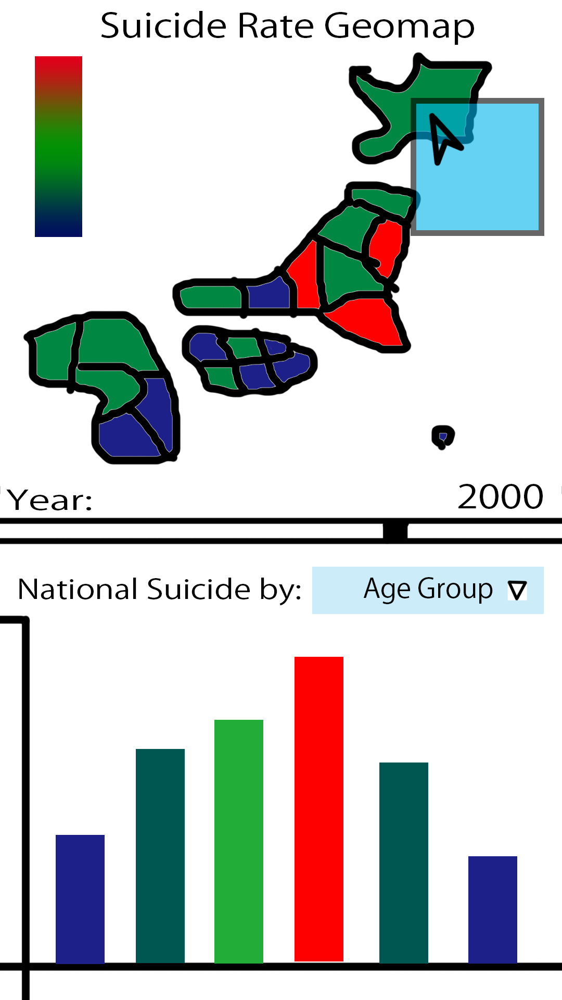

Japanese Suicide Retrospective(Recent History)
The purpose of the project is to show the recent history of Japanese suicides by prefecture, and also
its subdata for each age group. The user of the visualization would be able to understand the reasons of suicides
and how it is affecting specific age groups and the entire japanese population.
Ministry of Health, Labour and Welfare:
www.mhlw.go.jp
Data by Prefecture
1965 - 2000(for every 5 years)
2000 -2015(for every 5 years)
2003
2012 - 2013
2014 -2015
Data by age group(nationally):
1994 - 2003(every year)
National Police Agency:
www.npa.go.jp
Has 2007-2018 for per-prefecture data
2004 - 2018 for age group data
Also includes reason of death based on the last will of the victim for 2011 - 2018
Suicide data
Visualization examples: suicide by prefecture 2013(stats-japan.com):
Male
Female
Visualization Sketch:
